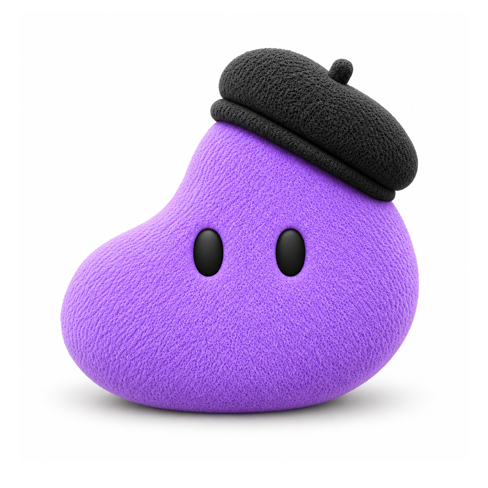
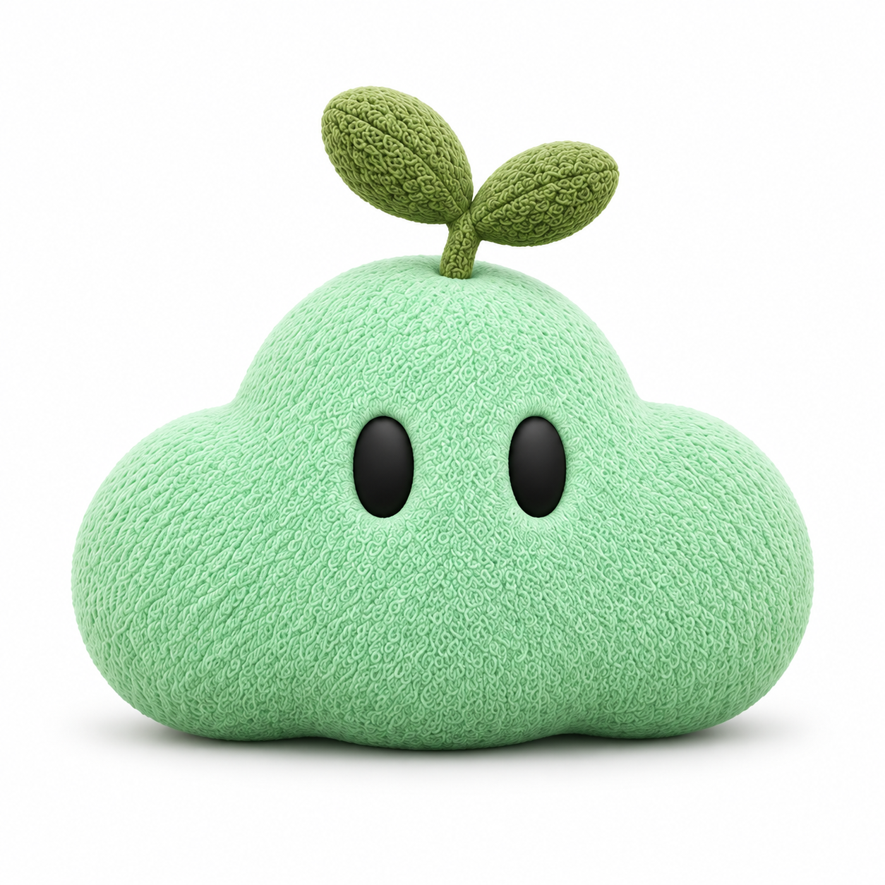
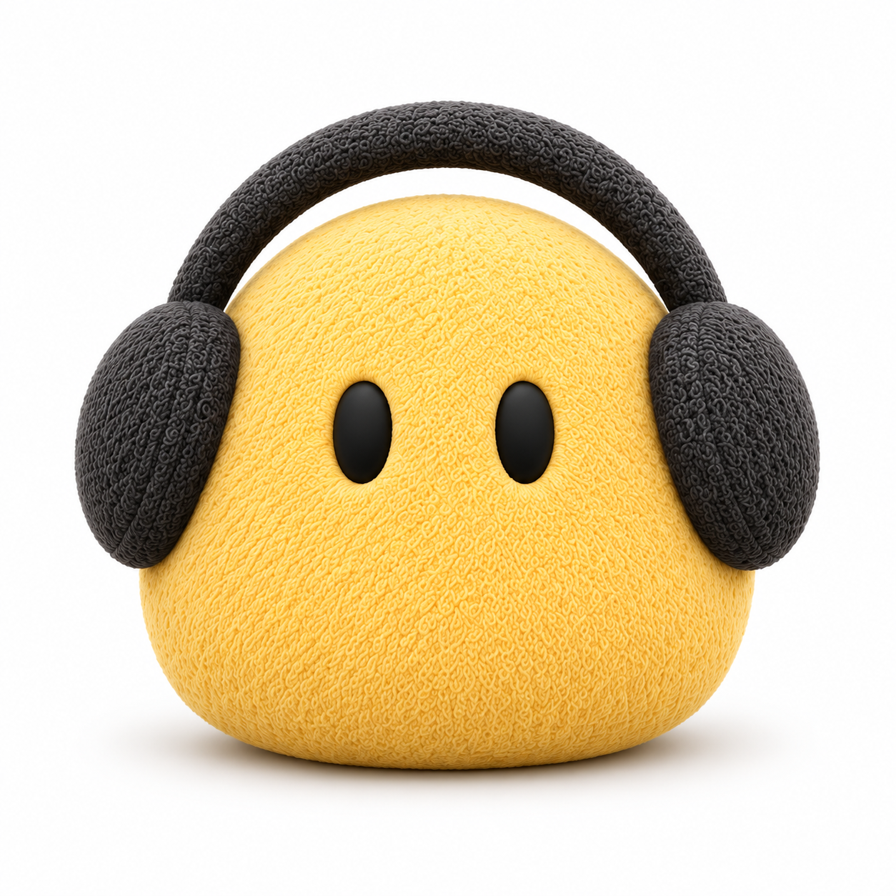
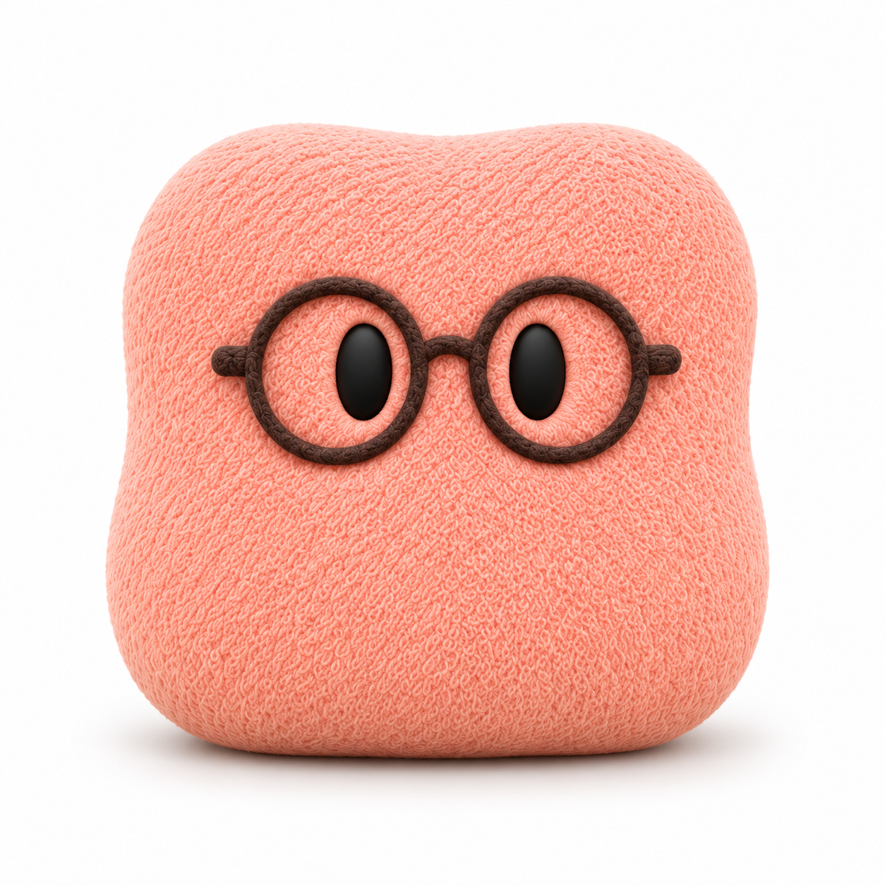
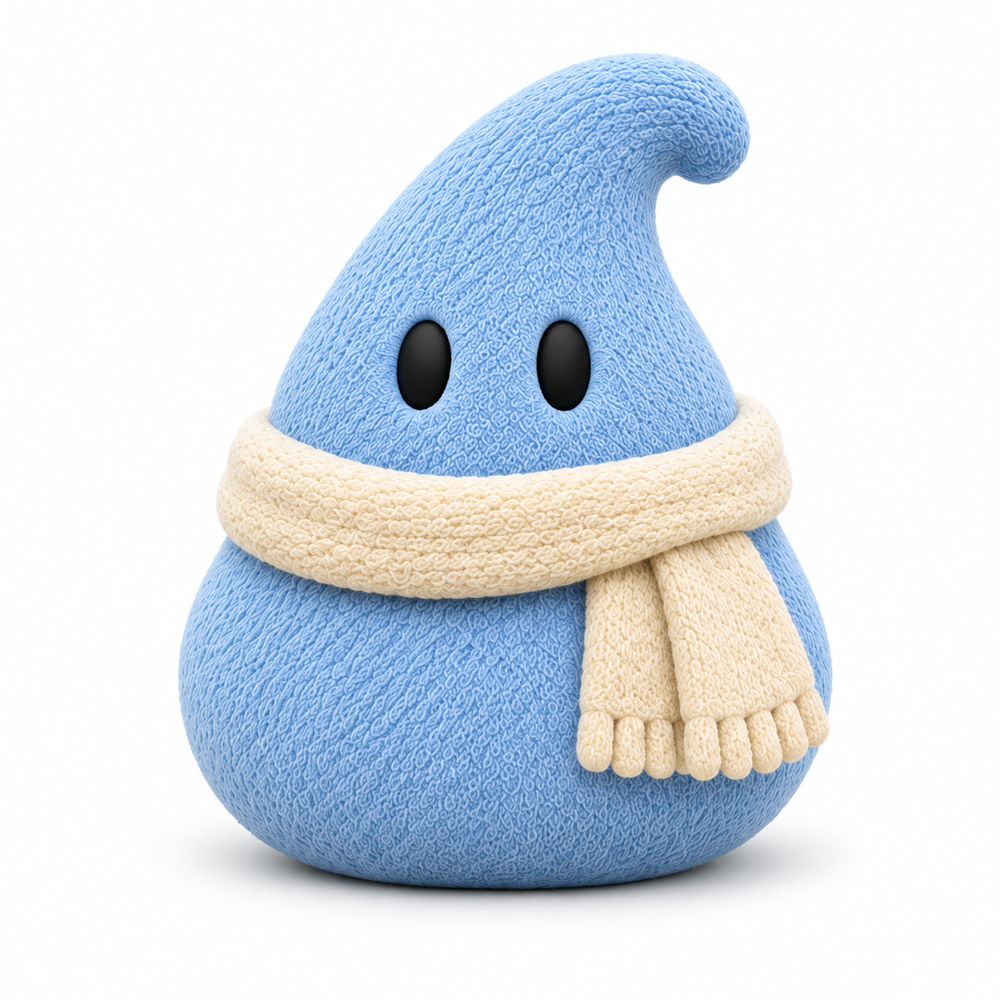

The buddy a person chooses sets the accent. Doany keeps violet; the four friends get ramps of their own, already in tokens.css as palette steps (--saemi-*, --dungdung-*, --popo-*, --dori-*). Nothing reads them yet: the switch layer (--accent-* under :root[data-buddy]) is planned in docs/features/buddy-choice/design.md. Each row here overrides the roles it reads to stand in for that switch. All three frames are new; none is in code.
card.png) moved by the same OKLCH shift that takes Doany's body to violet 9 (lightness −0.07, chroma × 1.12). Saemi's hue moves to 168 and Popo's to 42, away from the success green and danger red their chips would otherwise match; Dungdung's steps 1–6 take 2.2 × violet's chroma (7–8: 1.6 ×) so they read yellow rather than cream. 10 and pressed keep violet's offsets from 9; link keeps violet's link lightness.--text-accent: step 9 darkened in OKLCH lightness until it reaches 3:1 on a pressed sidebar row (--bg-app under --affordance-backdrop-pressed), the darkest surface they sit on. For Doany it is violet 9 itself, as today (3.70:1 there).--text-standard) where it does not (Saemi, Dungdung; frame 02, last column). Popo's step 9 is its body colour darkened to its icon colour so that white clears 3:1.--affordance-accent), and the chips keep 3 and 11.Body colours were sampled from the supplied cards (.doan/assets/buddies/*/card.png) and Doany's still; the ramp script is local (.scratch/buddy-choice/ramp.mjs), and its output is the token block in tokens.css.
Steps 1–12, pressed, link and the icon colour for each buddy, and the body the ramp comes from (a patch of the buddy's card at full size). Doany's row is the shipped violet.

Doany
Saemi
Dungdung
Popo
DoriWCAG 2 contrast. Chip text is step 11 on step 3 (needs 4.5:1). The icon colour is on a pressed sidebar row, the darkest surface it sits on (3:1). Send's icon (white or neutral ink, as chosen) is on step 9 / hover / pressed (3:1). The last column is white on step 9: below 3:1, Send takes neutral ink.
| Buddy | Chip text | Icon on a pressed row | Send icon, chosen ink (9 / hover / pressed) | White on 9 |
|---|---|---|---|---|
| Doany | Aa8.60:1 | ●3.70:1 | ↑white 5.21 / 5.74 / 6.20 | 5.21:1 |
| Saemi | Aa8.01:1 | ●3.02:1 | ↑ink 8.25 / 7.55 / 7.11 | 2.32:1 |
| Dungdung | Aa8.39:1 | ●3.05:1 | ↑ink 9.36 / 8.62 / 8.10 | 2.05:1 |
| Popo | Aa8.63:1 | ●3.00:1 | ↑white 3.02 / 3.30 / 3.54 | 3.02:1 |
| Dori | Aa8.29:1 | ●3.07:1 | ↑white 3.20 / 3.49 / 3.74 | 3.20:1 |
One row per buddy: Send, the preset chip, a suggested prompt, a sidebar unseen dot, the Home composer glow and the canvas working glow, each with the shipped CSS and that buddy's roles.